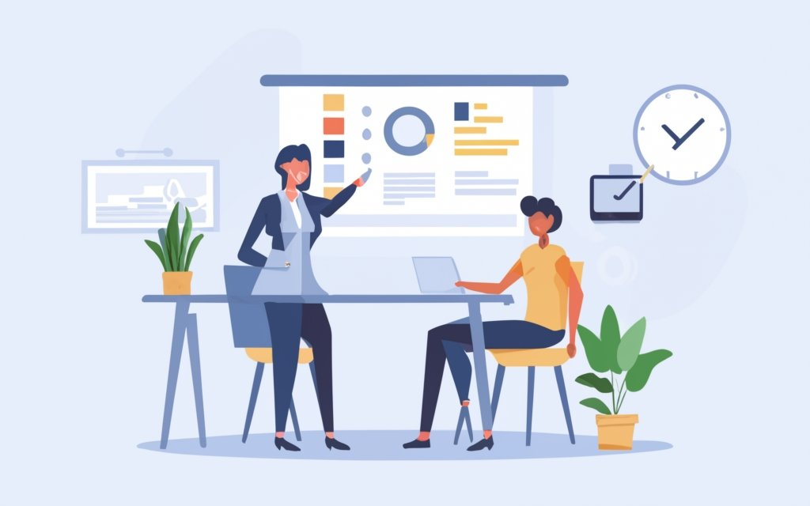
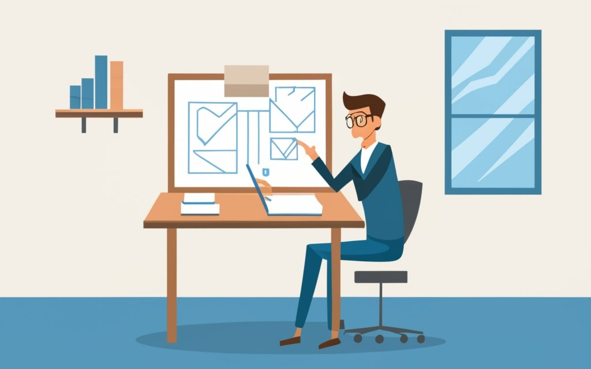

Entering an architectural competition to design a government building requires a multidisciplinary team with diverse skills to address various aspects of the project. Here are key roles that a student team should consider having:
Overview
Project Coordinators:
Possibly cover the roles of the:
Project Management, Planning and Scheduling, Communications, Human Resource Management, Progress Monitoring, Documentation, Issue Resolution/Team Relations, Surveys, Quality Control, Team Support
Architects / Designers:
Possibly cover the roles of the:
Conceptual Artists, Generative Artist, CAD Design, Interior Designer, Landscape Architect, Sustainability and Environmental Design Specialist:
Presenters:
Possibly cover the roles of the:
Presenter, Documents Journey of Team, Video Directing, the Scriptwriter/Storyboard Artist, Post-Production Narrator/Voice Over
Videographers / Post Production Video Editors:
Possibly cover the roles of the:
Video Production, Video Camera/Lighting, Video Recording, Video Editing, Sound Engineer, Graphic Design
Website Specialists:
Website Design, Curation, Social Media, etc.
Details
Project Managers / Coordinators:
Responsibilities: Overseeing the project timeline, coordinating team efforts, and ensuring that the design meets all competition requirements. The project manager is crucial for keeping the team organized and on schedule.
Architectural Designer/Lead Architect:
Responsibilities: Overseeing the overall design vision and aesthetics of the government building. The lead architect is responsible for conceptualizing the design, ensuring it meets functional requirements, and aligning with the competition guidelines.
Urban Planner:
Responsibilities: Collaborating with the architectural team to integrate the building into the surrounding urban environment. This role focuses on factors such as zoning, land use, and community impact.
Sustainability and Environmental Design Specialist:
Responsibilities: Integrating sustainable and environmentally friendly design principles into the project. This includes considerations for energy efficiency, renewable energy sources, and environmentally conscious materials.
Interior Designer:
Responsibilities: Focusing on the interior spaces of the government building, the interior designer ensures functionality, aesthetics, and user experience. Collaboration with the lead architect is crucial to maintain design coherence.
Landscape Architect:
Responsibilities: Designing the outdoor spaces surrounding the government building, including green areas, walkways, and landscaping. This role enhances the overall aesthetic and functionality of the site.
Communications and Presentation Specialist:
Responsibilities: Creating visualizations, renderings, and presentations to effectively communicate the design concept to competition judges and stakeholders. This role enhances the team's ability to convey their ideas clearly and persuasively.
Community Engagement Liaison:Responsibilities: Facilitating communication between the design team and the local community to gather input, address concerns, and ensure the building design reflects the needs and preferences of the community.
Having a well-rounded team with these roles will not only enhance the design process but also demonstrate a holistic approach to the competition judges, considering architectural, engineering, sustainability, and community aspects. Additionally, effective communication and collaboration among team members are critical for success in architectural competitions
Video Production
Creating a compelling video presentation for an architectural competition requires a diverse set of skills to effectively communicate the design concept, highlight key features, and engage the audience. Here are key roles that the student team should consider for producing a high-quality video presentation:
Video Producer/Director:
Responsibilities: Overseeing the entire video production process, from planning to editing. The video producer/director ensures that the video aligns with the team's vision and effectively communicates the design narrative.
Scriptwriter/Storyboard Artist:
Responsibilities: Crafting a script that outlines the narrative of the video presentation. This role helps structure the content and visuals, ensuring a coherent and engaging story. A storyboard artist can create visual representations of the planned shots.
Cinematographer/Visual Director:
Responsibilities: Planning and capturing visually appealing shots of the architectural design. The cinematographer works with the director to determine camera angles, lighting, and visual elements that enhance the overall aesthetic.
Graphic Designer/Animator:
Responsibilities: Creating visually appealing graphics, animations, and transitions to enhance the video presentation. Animations can be used to illustrate design concepts, showcase dynamic elements, or highlight key features.
Narrator/Voiceover Artist:
Responsibilities: Providing a clear and engaging voiceover for the video. The narrator helps guide the audience through the design narrative, explaining key concepts and features.
Editor/Post-Production Specialist:
Responsibilities: Editing the video footage, adding graphics, animations, and ensuring a smooth and polished final product. Post-production specialists play a crucial role in refining the visual and auditory elements of the presentation.
Sound Designer/Audio Engineer:
Responsibilities: Enhancing the audio quality of the presentation, including background music, sound effects, and ensuring clear narration. This role contributes to creating a professional and immersive viewing experience.
Project Manager/Coordinator:
Responsibilities: Coordinating the efforts of the video production team, managing timelines, and ensuring that all elements come together seamlessly. The project manager helps maintain organization and efficiency throughout the production process.
Quality Assurance Specialist:
Responsibilities: Reviewing the video for any technical issues, ensuring consistency, and confirming that the presentation aligns with the competition guidelines. Quality assurance specialists play a crucial role in delivering a polished final product.
Community Outreach Liaison (optional):
Responsibilities: Engaging with the local community and potential end-users of the building, gathering feedback, and incorporating community perspectives into the video presentation.
Effective collaboration among team members, clear communication, and attention to detail are essential for producing a high-quality video presentation. Each team member's role contributes to the overall impact and success of the presentation in conveying the design concept and persuading the competition judges.